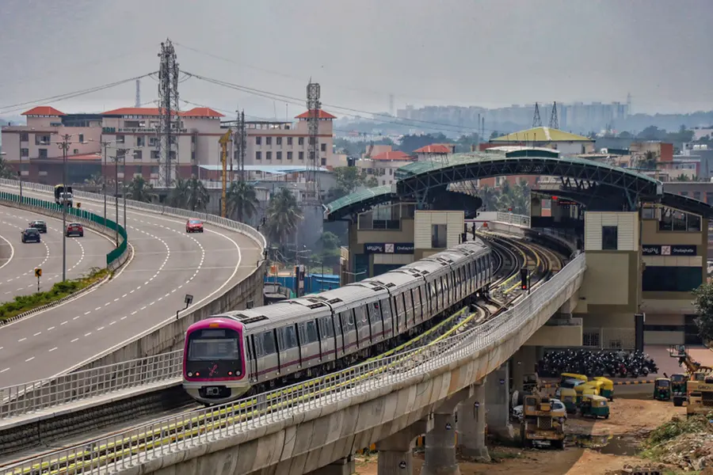

About Indian Railway Networks
Indian Railways operates one of the largest and most complex rail systems in the world. As the backbone of national logistics and passenger transport, it manages thousands of express, mail, high-speed, and suburban services daily, connecting metropolitan hubs to remote rural villages.
Top Railway Cities in India
Explore major transit stations representing the busiest hubs across the national rail corridors.





Administrative Railway Officials
Our central leadership committee driving network expansion and infrastructure safety initiatives.
Mr. Rajesh Agrawal
Member (Infrastructure)Portfolio: Network Development, High-Speed Tracks, Bridge Upgrades.
Credentials: 30+ years in Railway Civil Engineering and Strategic Operations.
Ms. Neetu Bhargava
Member (Finance)Portfolio: Capital Allocation, Project Auditing, Fare Frameworks.
Credentials: 25 years in Central Budget Planning and Corporate Finance Management.
Dr. Anil Kumar
General Manager (SR)Portfolio: Zonal Operations, Passenger Services, Local Safety Auditing.
Credentials: 28 years leading technical systems integration and station modernization.
Frequently Asked Questions
Find quick answers regarding our advanced digital booking services.
How do I reserve seats using the RailPass coach map?
Can I cancel or refund my ticket online?
What is a PNR and how do I download my ticket?
How is the price calculated based on Travel Class?
Customer Care & Crisis Helplines
24x7 Core National Helpline
Dial 139
Single unified hotline for medical, security, and tracking services.
Alternative Contact Portals
Email: support@railpass.gov.in
WhatsApp: +91 81300 13900
HQ Office: Indian Railways HQ, New Delhi